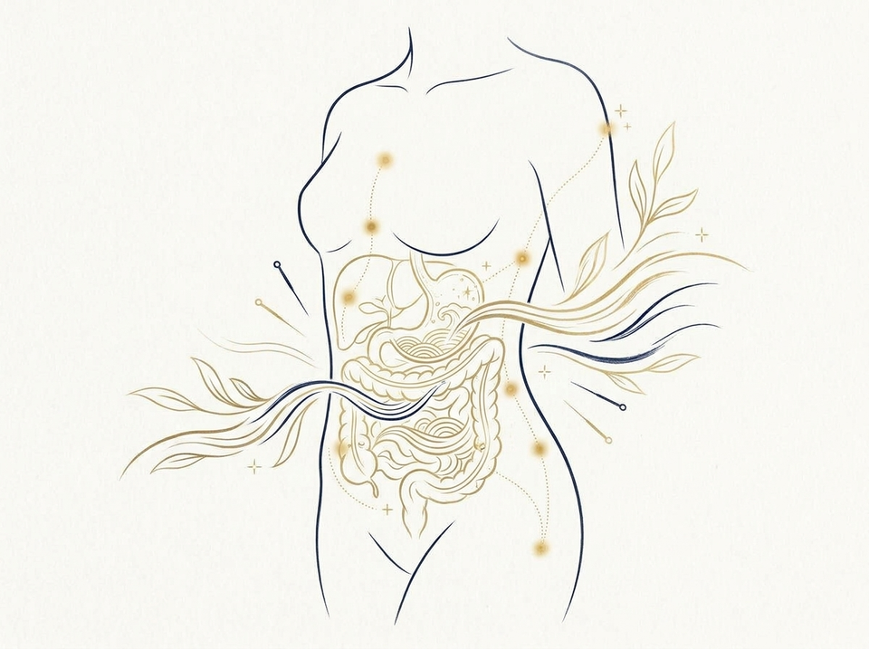

逆流性食道炎の鍼灸
胃酸の逆流による食道粘膜の炎症。自律神経と胃腸のバランスを整える鍼灸で症状の緩和を目指します。

このようなお悩みはありませんか？
- ✓食後や就寝時に胸やけが起こる
- ✓酸っぱい液体が喉までこみ上げる（呑酸）
- ✓喉の違和感や長引く咳・声のかすれがある
- ✓胃もたれや夜間の不快感で眠りが浅い
原因・メカニズム
強い酸性である胃液や胃内容物が、酸への防御機能を持たない食道へ逆流し、粘膜に炎症やびらん、潰瘍が生じる状態です。加齢や高脂肪食、喫煙・飲酒による下部食道括約筋の筋力低下に加え、食べ過ぎ・早食い・肥満・前かがみ姿勢による胃内圧の上昇、ストレスに伴う自律神経の乱れやピロリ菌などが複合的に関与します。
当院の施術アプローチ
1. 医療機関での検査・服薬状況を確認したうえで、不眠やストレスなど背景にある自律神経の乱れを丁寧に評価
2. 体性内臓反射を応用し、中脘・気舎・天柱などのツボへ鍼灸を行い、自律神経バランスと胃酸分泌・蠕動運動を調整
3. 食後すぐに横にならない習慣や少量ずつの食事、よく噛むことなど再発予防の生活アドバイスを実施
よくある質問（FAQ）
Q. 病院の胃薬を飲みながら鍼灸を受けても大丈夫ですか？
はい、処方薬を継続したまま併用いただけます。主治医の指導を守りながら、自律神経や胃腸の働きを補完的に整えていきます。
Q. 胸やけだけでなく不眠やストレスも強いのですが相談できますか？
はい、逆流性食道炎は自律神経の乱れが背景にあることが多いため、全身の緊張や睡眠面も含めて施術を行います。
#逆流性食道炎 胸やけ 呑酸 鍼灸 自律神経 銀座